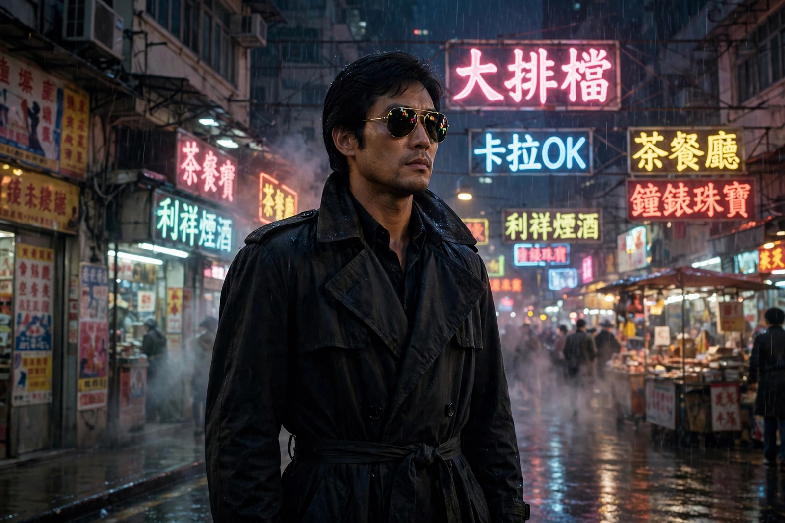

Chow Yun-fat
| Chow Yun-fat | |
|---|---|
 | |
| Born | 18 May 1955 (age 71) Lamma Island, Hong Kong |
| Occupation | Actor |
| Years active | 1973–present |
| Notable work | A Better Tomorrow (1986), The Killer (1989), Hard Boiled (1992), Crouching Tiger, Hidden Dragon (2000) |
| Spouse | Jasmine Tan (m. 1986) |
Chow Yun-fat SBS (Chinese: 周潤發; born 18 May 1955) is a Hong Kong actor whose cool, trench-coated screen persona in John Woo's "heroic bloodshed" films made him one of the biggest stars of Hong Kong cinema and an international icon. A three-time winner of the Hong Kong Film Award for Best Actor, he later crossed over to Hollywood and to major roles in Chinese-language cinema.
Early career
Born on Lamma Island to a poor family, Chow worked as a bellboy, postal worker and salesman before joining TVB's artist training programme in 1973. He became a television star in series such as The Bund (1980), playing the gangster Hui Man-keung, but his early film career was so unsuccessful that he was nicknamed "box-office poison".
Breakthrough with John Woo
Chow's career was transformed by A Better Tomorrow (1986), directed by John Woo and produced by Tsui Hark, in which he played the gunman Mark Gor, twirling in sunglasses and a long coat with a matchstick in his teeth. The film launched the heroic bloodshed genre within the Hong Kong action tradition and led to The Killer (1989) and Hard Boiled (1992), both with Woo. Chow also starred in Ringo Lam's City on Fire (1987) and Prison on Fire (1987), the comedy-drama An Autumn's Tale (1987) and the gambling hit God of Gamblers (1989).
International career
In Hollywood Chow starred in The Replacement Killers (1998), The Corruptor (1999) and Anna and the King (1999). He played Li Mu-bai in Ang Lee's Crouching Tiger, Hidden Dragon (2000), the monk Bulletproof Monk (2003), and Captain Sao Feng in Pirates of the Caribbean: At World's End (2007). In Asia he appeared in Zhang Yimou's Curse of the Golden Flower (2006) and the blockbuster crime film Project Gutenberg (2018), which won him renewed acclaim. Despite his wealth, Chow is famous in Hong Kong for his frugal lifestyle, using public transport and eating at street stalls; he has pledged to donate his fortune to charity.